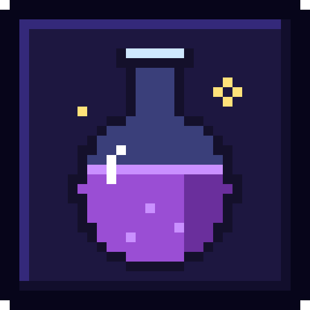
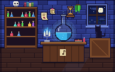
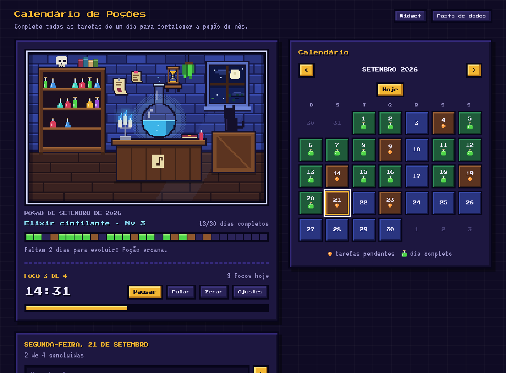
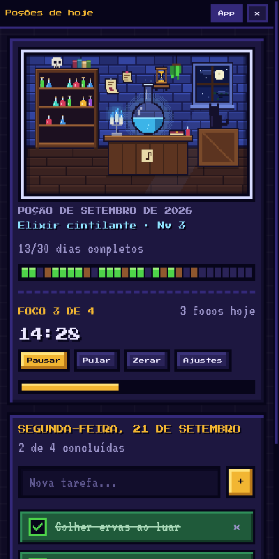
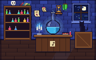

A poção do mês
Conclua todas as tarefas de um dia e a poção fica mais forte. A cada 5 dias completos ela evolui, de Água turva a Elixir lendário, e cada dia feito vira um frasquinho na estante.

Calendário de PoçõesTo-do · Calendário · Pomodoro
Um app de tarefas para desktop com um ateliê em pixel art. Cada dia com tudo concluído fortalece a poção do mês: o frasco enche, muda de cor e ganha um lugar na estante.
Windows · macOS · Ubuntu

O ateliê. Tudo aqui reage ao clique.

Conclua todas as tarefas de um dia e a poção fica mais forte. A cada 5 dias completos ela evolui, de Água turva a Elixir lendário, e cada dia feito vira um frasquinho na estante.
Tarefas organizadas por data. O calendário mostra de relance os dias pendentes e os completos, e o cartaz de pendências leva direto ao que ficou para trás.
Um Pomodoro no tema: 25 minutos de foco, pausas curtas e longas, tudo ajustável. A areia desce na parede do ateliê e os focos do dia ficam registrados.
A caveira chacoalha, o gato olha para trás, as velas apagam com um sopro, os livros caem em dominó e voltam por mágica. O vento balança os cartazes da parede.
Uma janelinha que fica por cima das outras com o cenário, a ampulheta e as tarefas de hoje. Marcar num lado atualiza o outro na hora.
Sem conta, sem nuvem, sem rastreio. Seus dados ficam num arquivo dentro da pasta que você escolher, como um cofre. Troque de pasta quando quiser.
Mês novo, frasco novo. As poções dos meses anteriores ficam guardadas no livro de conquistas.

O widget acompanha você enquanto trabalha em outra coisa. O relógio da ampulheta é o mesmo do app: inicie num, pause no outro.
Quando o foco termina, o ateliê avisa com um sininho 8-bit e uma notificação do sistema. As duas coisas podem ser desligadas nos ajustes.

Clique num livro da estante. Depois de um instante, eles voltam em pé num passe de mágica.
Grátis. Escolha o seu sistema:
Windows 10 e 11 · 64 bits
Baixar .exeNo aviso do SmartScreen, clique em Mais informações e depois em Executar assim mesmo.
Intel e Apple Silicon
Baixar .dmgArraste para Aplicativos, clique no app com o botão direito e escolha Abrir. Se o sistema disser que está danificado, rode no Terminal:xattr -cr "/Applications/Calendário de Poções.app"
Ubuntu, Debian e derivados · 64 bits
Baixar .debNa pasta do download, instale com:sudo apt install ./calendario-de-pocoes-ubuntu.deb
Os instaladores não têm assinatura digital paga, por isso o sistema pede uma confirmação na primeira vez. O código é público: veja no GitHub ou confira todas as versões.